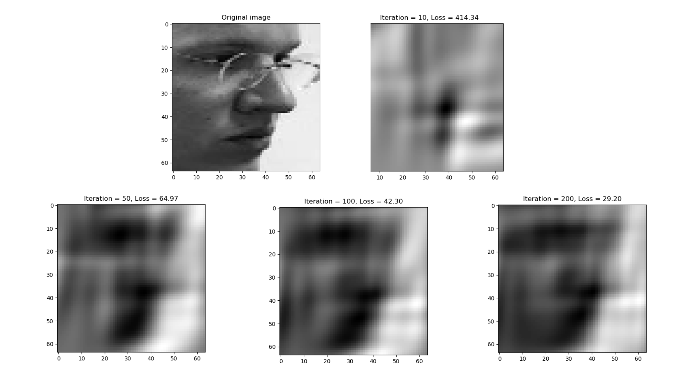
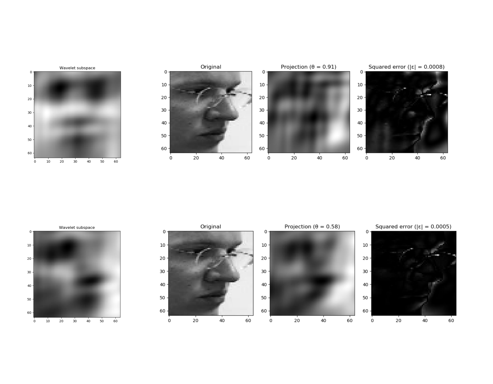
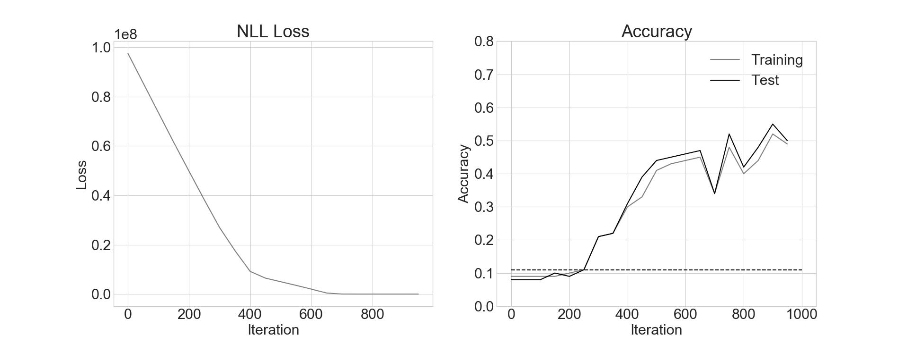

Computer Vision Laboratory (2019/2 - IME/USP)
Diego Lima
November 25, 2019
IR-based eye trackers rely on cues such as corneal reflection to disambiguate head movements from eye movements. We can use facial features to do that for visible-light eye trackers.
This solution impose hardware requirements (GPUs) if we are to achieve real time performance, which we might not have available.
Can we represent the face pose estimation problem in a lower-dimensional space to be able to solve it without requiring too much computational resources?
2D (real) wavelets are functions of four parameters:
\[ \theta = [x_0,y_0,u,v] \]
\[ \psi_{\theta} = e^{\frac{u(x-x_0)^2}{2} + \frac{v(y-y_0)^2}{2}} \sin(u(x - x_0) + v(y-y_0)) \]
Using \(n\) wavelets, we can can represent an image column vector \(x\) in a smaller subspace by finding \(4n + n\) parameters which minimize the L2 norm:
\[ \hat x = \underset{\theta_i, w_i}{\operatorname{argmin}} \Vert \sum_i w_i \psi_{\theta_i} - x \Vert_2^2 = \underset{\theta, w}{\operatorname{argmin}} \Vert \Psi_\theta w - x \Vert_2^2 \]

After 200 iterations, we went from a 4096-dimensional vector (64x64 image) to a 180-dimensional vector of parameters that preserved a good deal of information about the image.
The ammount of information preserved can be quantified by the residual error of the difference image \(\Vert \Psi_\theta w - x \Vert_2^2\)
We carried out the optimization with PyTorch using the Adam algorithm (\(lr=0.1\))
The optimization above is relatively cheap (takes ~10s), but we still cannot do it in real time (30 FPS).
The advantage of this technique is that we don’t actually have to perform it for every frame: once we find an optimized space to represent some set of objects, new objects can be represented over it by simple projection:
\[ w_i = (\Psi^T \Psi)^{-1}\Psi^T x_i \]
Where the expensive part \((\Psi^T \Psi)^{-1}\Psi^T\) can be computed offline, and the new frame (\(x_i\)) can be projected into this space by one matrix-vector multiplication.
As faces turn around over the vertical and horizontal direction, facial features (eyes, hair, noses, mouth) vary widely. To make our algorithm robust to such changes, we can optimize over sets of faces at different poses.
Images from the Head Pose Image Database https://www-prima.inrialpes.fr/perso/Gourier/Faces/HPDatabase.html were used to establish 9 pose-specific wavelet subspaces (10 different persons, 186 images from each)
To achieve that, we adapted the previous algorithm just by calculating the norm over sets of images instead of calculating it over a single image:
\[ \hat x_k = \underset{\theta_k, w_k}{\operatorname{argmin}} \Vert \sum_i \Psi_{\theta_k} w_k - x_i \Vert_2^2 \]
This optimization preserves features constant across different poses while attenuating individual differences.

The errors when projecting a new face image against its corresponding pose subspace are smaller than when projecting against other pose subsaces, which suggests the projection vectors \(w_i\) are linearly separable.
This allows us to train a classifier by projecting a new unknown image \(x_i\) into all trained subspaces, and using the projections as features for a classifier.
The classifier can be expressed as:
\[ y_i = \operatorname{LogSoftmax}{ \{ ( (\Psi^T \Psi)^{-1}\Psi^T x_i) W + b ) \} } \]
Where \((\Psi^T \Psi)^{-1}\Psi^T x_i\) now represents the projections over all optimized subspaces concatenated over the column dimension, \(W\) is a matrix of adjustable parameters that maps the projections to the classifier output, and \(b\) is an adjustable bias parameter.
The same optimizer configuration was used to train the classifier, but now we use the Negative Log-Likelihood (NLL) loss:
activation = torch.nn.LogSoftmax(dim=1)
loss = torch.nn.NLLLoss()
projs = torch.zeros(self.n, self.n_wavelets * self.n_classes)
for i, c in enumerate(class_subspaces):
projs[:, n_wavelets*i : n_wavelets*i + n_wavelets] = c.project(imgs).T
for i in range(max_iter):
optimizer.zero_grad()
nll = self.loss( activation(projs @ ce_params + bias[None,:]), train_labels)
nll.backward(retain_graph=True)
optimizer.step()
To solve the image approximation problem, imposing a restriction to the range of parameter variation via a covariance matrix was essential. This matrix transformed the objective surface into a convex function, guaranteeing that the optimizer did not get stuck.
Setting a lower learning rate (\(lr=0.1\)) was important as well. The optimization took only a small fraction of the time to converge after this change.
Error analysis The outputs might actually point to classes which are at the neighboring pose angles, which suggest the problem can be best formulated as a regression one, where we would measure the error as a discrepancy from any given pose angle. The algorithm in its current form might actually present a tolerable error on a continuous scale.
Check real-time performance Verify the performance of frame-by-frame analysis, using an implementation on a compiled language. If we can afford to, increase the number of wavelets used to represent the subspaces.
Parameter tweaking We might initialize some parameters at overlapping locations but at higher spatial frequencies so the subspaces can better synthesize details. It might be the case that the errors might be due to the subspaces representing mostly low-frequency details.
Szu, H., Telfer, B., & Garcia, J. (1996). Wavelet transforms and neural networks for compression and recognition. Neural networks, 9(4), 695-708.
Daugman, J. G. (1988). Complete discrete 2-D Gabor transforms by neural networks for image analysis and compression. IEEE Transactions on acoustics, speech, and signal processing, 36(7), 1169-1179.
Feris, R. S., Cesar, R. M., & Kruger, V. (2001, July). Efficient real-time face tracking in wavelet subspace. In Proceedings IEEE ICCV Workshop on Recognition, Analysis, and Tracking of Faces and Gestures in Real-Time Systems (pp. 113-118). IEEE.